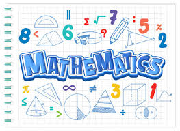
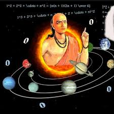
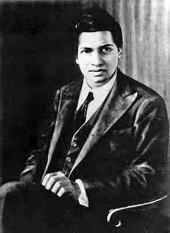

**WELCOME TO**

*INFORMATION*
1.Aryabhata:-
*Aryabhata was one of the earliest Indian mathematicians and
astronomers. His major contributions include:
• Aryabhata: Aryabhata's most famous work, which covers a
wide range of topics in mathematics and astronomy.
It includes methods for calculating the areas of triangles and
circles, and approximations for the value of pi2.
• Place Value System: Aryabhata is credited with the
development of the place value
system and the use of zero as a placeholder.
• Trigonometry: He made significant contributions to
trigonometry,
including the introduction of sine and cosine functions.
• Diophantine Equations: Aryabhata was the first to solve
Diophantine equations,
which are equations with integer solutions.

Brahmagupta:-
*Brahmagupta was another prominent Indian mathematician and
astronomer. His contributions include:
•Quadratic Formula: Brahmagupta provided the first clear
description of the quadratic formula.
•Brahmagupta's Formula: He developed a formula for
calculating the area of a cyclic quadrilateral.
•Pell's Equation: Brahmagupta made significant progress
in
solving Pell's equation,
which is a type of Diophantine equation.
Srinivasa Ramanujan:-
*Ramanujan was a self-taught mathematician whose work has had a
lasting
impact on various fields of mathematics. CONTRIBUTIONS:
•Infinite Series: Ramanujan discovered many new infinite
series for mathematical constants such as pi.
•Partition Function: He developed the partition function,
which counts the number of ways a given positive
integer can be expressed as a sum of positive integers.
•Mock Theta Functions: Ramanujan introduced mock theta
functions, which have applications in number
theory and mathematical physics.
•Ramanujan's Summation: He proposed a method for summing
divergent series, which has been influential in
the field of analytic number theory.

These mathematicians have made significant contributions to the
field of mathematics.